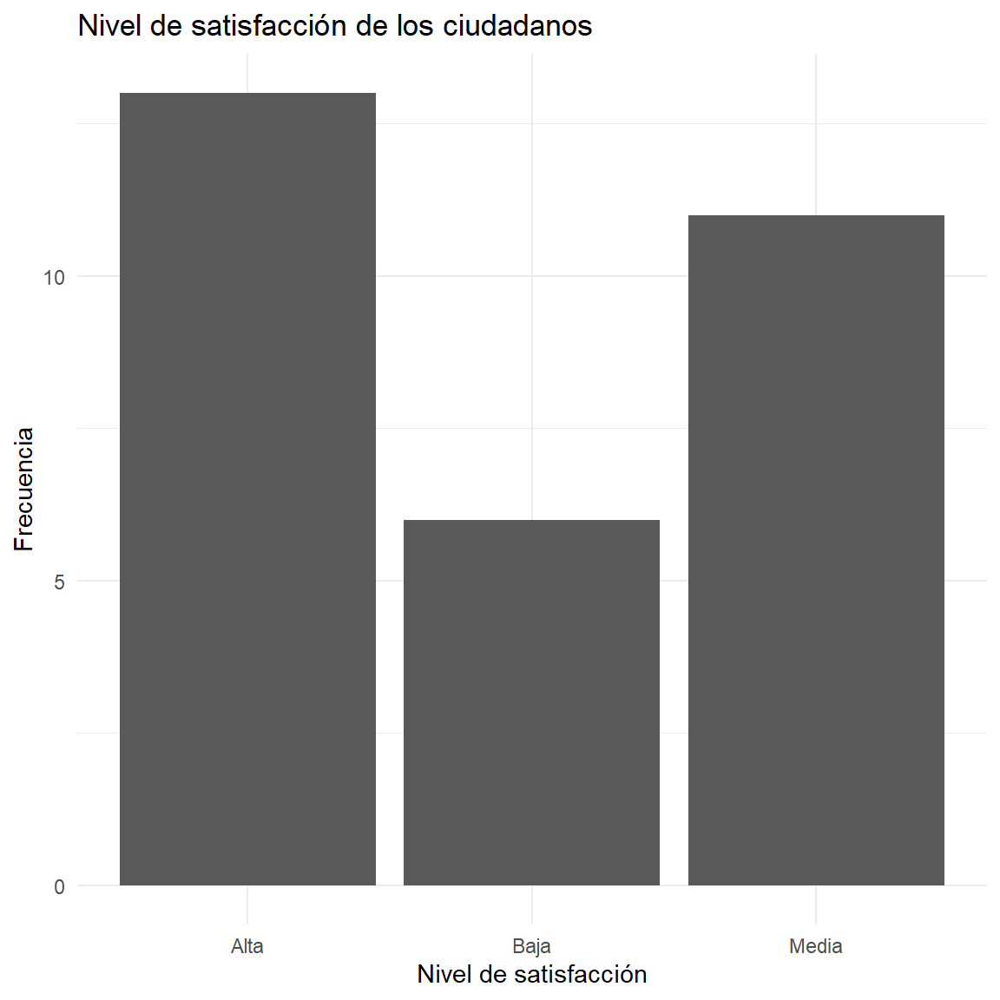
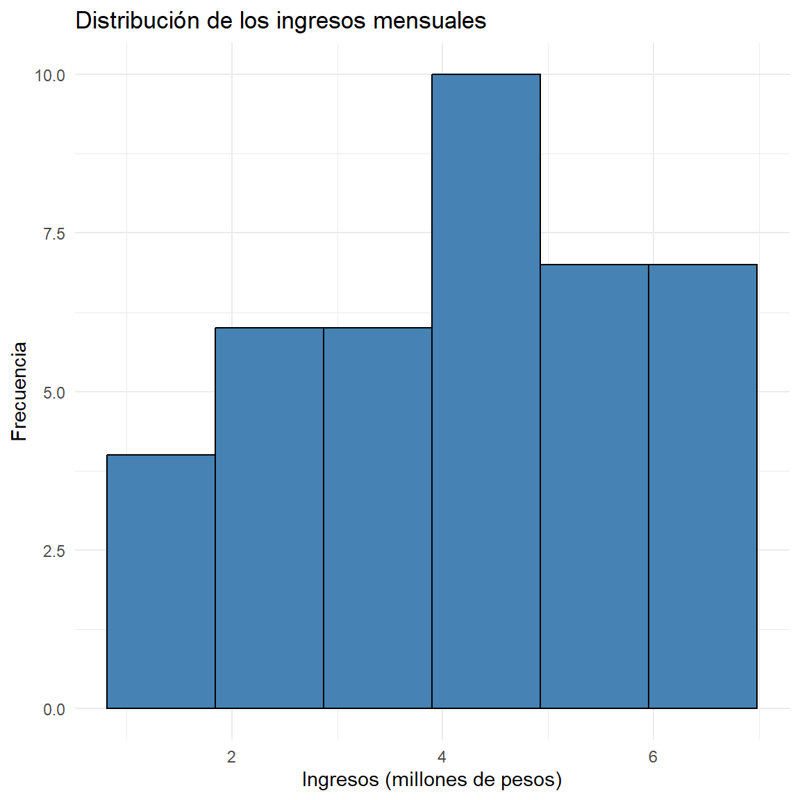
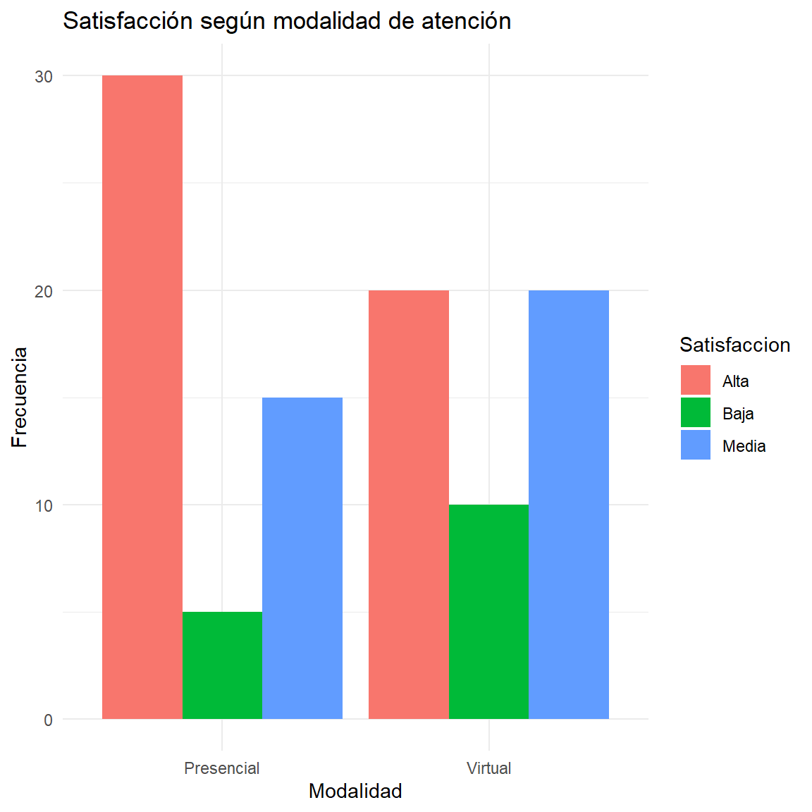
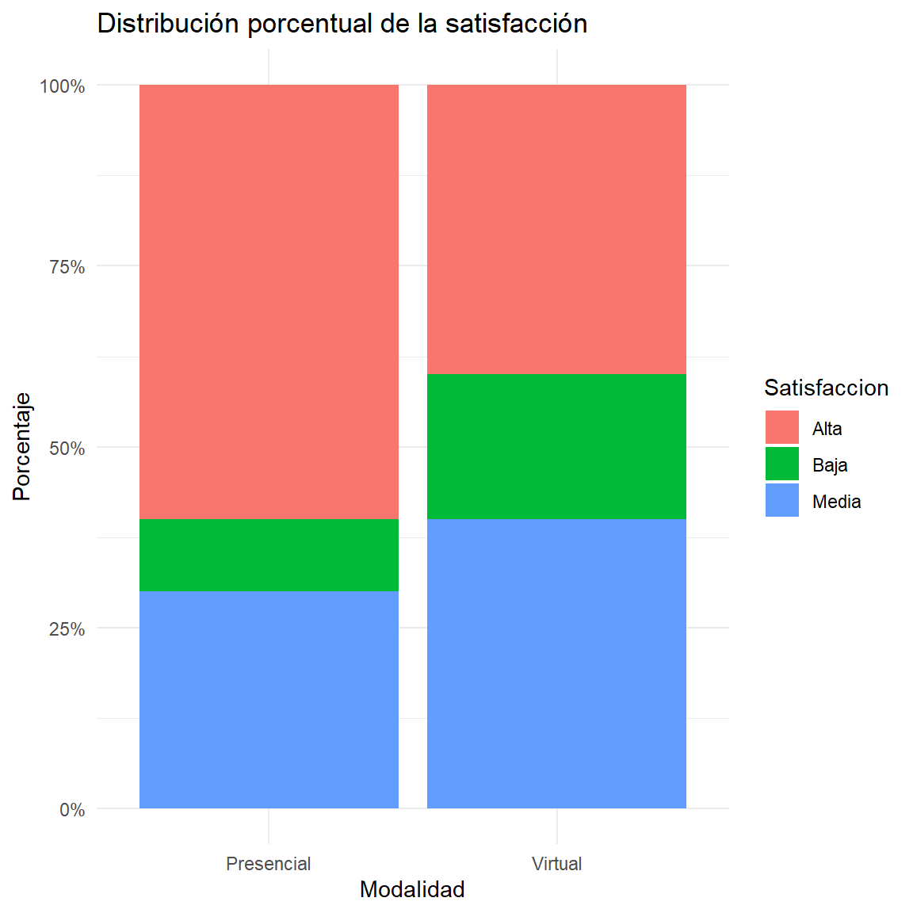

Ver código
options(
knitr.table.format = "html",
scipen = 999
)options(
knitr.table.format = "html",
scipen = 999
)
options(repos = c(CRAN="https://cloud.r-project.org"))
new.pkg <- pkg[!(pkg %in% rownames(installed.packages()))]
if(length(new.pkg)) install.packages(new.pkg, dependencies = TRUE)
invisible(lapply(pkg, function(p){
suppressPackageStartupMessages(library(p, character.only = TRUE))
}))
}
packages <- c("tidyverse", "kableExtra", "psych", "readxl")
ipak(packages)Una distribución de frecuencias constituye una de las herramientas fundamentales del análisis estadístico descriptivo. Su propósito es organizar y resumir un conjunto de datos mediante el conteo de las veces que aparece cada valor o categoría de una variable.
Cuando se analiza una sola variable, se construye una distribución de frecuencias unidimensional. Cuando se estudian simultáneamente dos variables, se utiliza una distribución de frecuencias bidimensional, también conocida como tabla de contingencia cuando las variables son categóricas.
Estas herramientas permiten transformar grandes cantidades de información en estructuras organizadas que facilitan la interpretación, comparación y representación gráfica de los datos.
En el contexto de la Administración Pública, por ejemplo, pueden utilizarse para estudiar:
Nivel educativo de los ciudadanos.
Tipo de servicio público utilizado.
Satisfacción con una entidad estatal.
Edad de los usuarios.
Ingresos de los hogares.
Relación entre nivel educativo y satisfacción.
Relación entre género y uso de servicios públicos.
Relación entre estrato socioeconómico y acceso a programas sociales.
1.1 Concepto
Una distribución de frecuencias unidimensional organiza los valores observados de una única variable junto con el número de veces que aparece cada valor o categoría.
Sea:
X = x_1, x_2, x_3, \ldots, x_n
un conjunto de $n$ observaciones de una variable estadística $X$.
La distribución de frecuencias permite determinar cuántas observaciones corresponden a cada valor o categoría de la variable.
1.2 Elementos de una distribución de frecuencias
Una tabla de frecuencias puede contener las siguientes columnas:
| Símbolo | Nombre | Interpretación |
|---|---|---|
| x_i | Valor o categoría | Valor observado de la variable |
| f_i | Frecuencia absoluta | Número de veces que aparece x_i |
| F_i | Frecuencia absoluta acumulada | Número de observaciones hasta x_i |
| h_i | Frecuencia relativa | Proporción de observaciones correspondiente a x_i |
| H_i | Frecuencia relativa acumulada | Proporción acumulada hasta x_i |
| \% | Porcentaje | Frecuencia relativa expresada en porcentaje |
La frecuencia absoluta de un valor $x_i$, representada por $f_i$, corresponde al número de veces que dicho valor aparece en el conjunto de datos.
Se cumple:
∑i=1kfi=n\\sum\_{i=1}\^{k} f_i=n
donde:
$k$ = número de valores o categorías.
$f_i$ = frecuencia absoluta.
$n$ = tamaño de la muestra.
Ejemplo
Supongamos que se consulta a 20 ciudadanos sobre el número de trámites realizados durante el último año:
tramites <- c( 1,2,1,3,2,4,1,2,3,1, 2,3,2,1,4,2,3,1,2,3 )
table(tramites) tramites
1 2 3 4
6 7 5 2 La función table() permite obtener las frecuencias absolutas.
La frecuencia absoluta acumulada se representa mediante $F_i$ y corresponde a la suma progresiva de las frecuencias absolutas.
Se calcula mediante:
Fi=∑j=1ifjF_i=\\sum\_{j=1}\^{i}f_j
Por tanto:
F1=f1F_1=f_1 F2=f1+f2F_2=f_1+f_2 F3=f1+f2+f3F_3=f_1+f_2+f_3
y así sucesivamente.
La última frecuencia acumulada debe ser igual al tamaño de la muestra:
Fk=nF_k=n
En R
freq <- table(tramites)
freq_abs_acum <- cumsum(freq)
freq_abs_acum 1 2 3 4
6 13 18 20 {r} La función cumsum() calcula sumas acumuladas.
La frecuencia relativa indica la proporción de observaciones que corresponde a cada valor o categoría.
Se representa mediante $h_i$ y se calcula como:
hi=finh_i=\\frac{f_i}{n}
La suma de todas las frecuencias relativas debe ser:
∑i=1khi=1\\sum\_{i=1}\^{k}h_i=1
En porcentaje
Para expresar la frecuencia relativa como porcentaje:
pi=hi×100p_i=h_i\\times100
Por ejemplo, si:
hi=0.25h_i=0.25
entonces:
pi=0.25(100)=25%p_i=0.25(100)=25\\%
La frecuencia relativa acumulada se representa mediante $H_i$.
Se calcula mediante:
Hi=∑j=1ihjH_i=\\sum\_{j=1}\^{i}h_j
También puede calcularse directamente como:
Hi=FinH_i=\\frac{F_i}{n}
La última frecuencia relativa acumulada debe ser:
Hk=1H_k=1
o equivalentemente:
Hk=100%H_k=100\\%
Una tabla de frecuencias para una variable cuantitativa discreta puede estructurarse así:
| x_i | f_i | F_i | h_i | H_i | % |
|---|---|---|---|---|---|
| x_1 | f_1 | F_1 | h_1 | H_1 | 100 \cdot h_1 |
| x_2 | f_2 | F_2 | h_2 | H_2 | 100 \cdot h_2 |
| \vdots | \vdots | \vdots | \vdots | \vdots | \vdots |
| x_k | f_k | n | 1 | 1 | 100\% |
Una forma sencilla de construir una tabla completa es:
frecuencias <- as.data.frame(table(tramites))
names(frecuencias) <- c("Valor", "fi")
frecuencias$Fi <- cumsum(frecuencias$fi)
frecuencias$hi <- frecuencias$fi / sum(frecuencias$fi)
frecuencias$Hi <- cumsum(frecuencias$hi)
frecuencias$Porcentaje <- frecuencias$hi * 100
frecuencias Valor fi Fi hi Hi Porcentaje
1 1 6 6 0.30 0.30 30
2 2 7 13 0.35 0.65 35
3 3 5 18 0.25 0.90 25
4 4 2 20 0.10 1.00 10Para redondear:
frecuencias$hi <- round(frecuencias$hi, 4)
frecuencias$Hi <- round(frecuencias$Hi, 4)
frecuencias$Porcentaje <- round( frecuencias$Porcentaje, 2 )
frecuencias Valor fi Fi hi Hi Porcentaje
1 1 6 6 0.30 0.30 30
2 2 7 13 0.35 0.65 35
3 3 5 18 0.25 0.90 25
4 4 2 20 0.10 1.00 10Cuando la variable es cualitativa, los valores representan categorías.
Ejemplo
Supongamos una encuesta realizada a 30 ciudadanos sobre el nivel de satisfacción con un servicio público:
satisfaccion <- c("Alta", "Media", "Baja", "Alta", "Media", "Alta", "Baja", "Media",
"Alta", "Alta", "Media", "Baja", "Alta", "Media", "Alta", "Baja", "Media", "Alta",
"Media", "Alta", "Baja", "Alta", "Media", "Alta", "Media", "Baja", "Alta", "Media",
"Alta", "Media")
table(satisfaccion)satisfaccion
Alta Baja Media
13 6 11 La tabla puede complementarse con porcentajes:
prop.table(table(satisfaccion)) satisfaccion
Alta Baja Media
0.4333333 0.2000000 0.3666667 Y expresarse en porcentaje:
round(prop.table(table(satisfaccion)) * 100, 2) satisfaccion
Alta Baja Media
43.33 20.00 36.67 La elección del gráfico depende del tipo de variable.
| Tipo de variable | Gráfico recomendado |
|---|---|
| Cualitativa nominal | Barras |
| Cualitativa ordinal | Barras ordenadas |
| Cuantitativa discreta | Barras |
| Cuantitativa continua | Histograma |
| Cuantitativa | Polígono de frecuencias |
| Cuantitativa | Ojiva para frecuencias acumuladas |
Gráfico de barras
library(ggplot2)
ggplot(data.frame(satisfaccion), aes(x = satisfaccion)) +
geom_bar() +
labs(
title = "Nivel de satisfacción de los ciudadanos",
x = "Nivel de satisfacción",
y = "Frecuencia"
) +
theme_minimal()
Cuando una variable cuantitativa continua presenta muchos valores diferentes, puede ser conveniente agruparlos en intervalos de clase.
Por ejemplo:
[20,30),[30,40),[40,50),[50,60)[20,30),\quad [30,40),\quad [40,50),\quad [50,60)
Cada intervalo contiene un conjunto de valores.
Elementos de una distribución agrupada
Para cada intervalo pueden calcularse:
Límite inferior.
Límite superior.
Marca de clase.
Frecuencia absoluta.
Frecuencia acumulada.
Frecuencia relativa.
Frecuencia relativa acumulada.
La marca de clase se calcula mediante:
xi=Li+Ui2x_i=\\frac{L_i+U_i}{2}
donde:
$L_i$ = límite inferior.
$U_i$ = límite superior.
Una regla frecuente para determinar aproximadamente el número de clases es la regla de Sturges:
k=1+3.322log10(n)k=1+3.322\\log\_{10}(n)
donde $n$ representa el tamaño de la muestra.
Otra expresión equivalente es:
k=1+log2(n)k=1+\\log_2(n)
Una vez determinado $k$, puede calcularse la amplitud aproximada:
A=RkA=\\frac{R}{k}
donde:
R=Xmax−XminR=X\_{\\max}-X\_{\\min}
es el rango.
Ejemplo con datos cuantitativos
Supongamos que se dispone de los ingresos mensuales de 40 usuarios, expresados en millones de pesos:
set.seed(123)
ingresos <- round(runif(40, 1.2, 6.5), 2)
ingresos [1] 2.72 5.38 3.37 5.88 6.18 1.44 4.00 5.93 4.12 3.62 6.27 3.60 4.79 4.23 1.75
[16] 5.97 2.50 1.42 2.94 6.26 5.91 4.87 4.59 6.47 4.68 4.96 4.08 4.35 2.73 1.98
[31] 6.30 5.98 4.86 5.42 1.33 3.73 5.22 2.35 2.89 2.43Podemos construir intervalos mediante cut():
intervalos <- cut(ingresos, breaks = 1:7, right = FALSE)
table(intervalos)intervalos
[1,2) [2,3) [3,4) [4,5) [5,6) [6,7)
5 7 4 11 8 5 Para representar una variable cuantitativa continua:
library(ggplot2)
# Si 'ingresos' es un vector numérico:
ggplot(data.frame(ingresos), aes(x = ingresos)) +
geom_histogram(bins = 6, fill = "steelblue", color = "black") +
labs(
title = "Distribución de los ingresos mensuales",
x = "Ingresos (millones de pesos)",
y = "Frecuencia"
) +
theme_minimal()
Concepto
Una distribución de frecuencias bidimensional estudia simultáneamente dos variables estadísticas.
Sean:
XyYX \\quad \\text{y} \\quad
dos variables observadas sobre los mismos individuos.
El objetivo consiste en analizar cómo se distribuyen conjuntamente los valores de ambas variables.
Por ejemplo:
Edad y satisfacción.
Nivel educativo y satisfacción.
Estrato y acceso a un programa social.
Modalidad de atención y satisfacción.
Género y tipo de servicio utilizado.
Cuando las dos variables son cualitativas o categóricas, la distribución bidimensional suele representarse mediante una tabla de contingencia.
Supongamos que se estudian:
$X$: modalidad de atención.
$Y$: nivel de satisfacción.
La tabla puede tener la siguiente estructura:
| Modalidad | Alta | Media | Baja | Total |
|---|---|---|---|---|
| Presencial | n_{11} | n_{12} | n_{13} | n_{1\cdot} |
| Virtual | n_{21} | n_{22} | n_{23} | n_{2\cdot} |
| Total | n_{\cdot 1} | n_{\cdot 2} | n_{\cdot 3} | n |
Los valores $n_{ij}$ representan las frecuencias conjuntas.
La frecuencia conjunta $n_{ij}$ corresponde al número de individuos que simultáneamente presentan:
X=xiX=x_i
y
Y=yjY=y_j
Por ejemplo:
n23n\_{23}
representaría el número de individuos pertenecientes a la categoría 2 de $X$ y a la categoría 3 de $Y$.
Las frecuencias marginales se obtienen sumando las frecuencias de las filas o columnas.
Frecuencia marginal de X
ni.=∑jnijn\_{i.}=\\sum_j n\_{ij}
Frecuencia marginal de Y
n.j=∑inijn\_{.j}=\\sum_i n\_{ij}
El total general es:
n=∑i∑jnijn=\\sum_i\\sum_j n\_{ij}
La frecuencia relativa conjunta se calcula como:
hij=nijnh\_{ij}=\\frac{n\_{ij}}{n}
y cumple:
∑i∑jhij=1\\sum_i\\sum_jh\_{ij}=1
En porcentaje:
pij=100hijp\_{ij}=100h\_{ij}
Las frecuencias condicionales permiten analizar la distribución de una variable dentro de una categoría específica de la otra variable.
Si queremos analizar $Y$ condicionado a $X=x_i$:
hj∣i=nijni.h\_{j\|i}= \\frac{n\_{ij}}{n\_{i.}}
Si queremos analizar $X$ condicionado a $Y=y_j$:
hi∣j=nijn.jh\_{i\|j}= \\frac{n\_{ij}}{n\_{.j}}
Las frecuencias condicionales son fundamentales para estudiar posibles relaciones entre dos variables.
Ejemplo de tabla bidimensional en R
Consideremos una encuesta realizada a 100 ciudadanos:
datos <- data.frame(
Modalidad = c("Presencial", "Presencial", "Presencial", "Virtual", "Virtual", "Virtual"),
Satisfaccion = c("Alta", "Media", "Baja", "Alta", "Media", "Baja"),
Frecuencia = c(30, 15, 5, 20, 20, 10)
)
datos Modalidad Satisfaccion Frecuencia
1 Presencial Alta 30
2 Presencial Media 15
3 Presencial Baja 5
4 Virtual Alta 20
5 Virtual Media 20
6 Virtual Baja 10Para obtener una tabla de contingencia:
tabla <- xtabs( Frecuencia ~ Modalidad + Satisfaccion, data = datos )
tabla Satisfaccion
Modalidad Alta Baja Media
Presencial 30 5 15
Virtual 20 10 20El resultado conceptual es:
| Modalidad | Alta | Media | Baja |
|---|---|---|---|
| Presencial | 30 | 15 | 5 |
| Virtual | 20 | 20 | 10 |
Totales marginales en R
Podemos obtener los totales de filas y columnas mediante:
addmargins(tabla) Satisfaccion
Modalidad Alta Baja Media Sum
Presencial 30 5 15 50
Virtual 20 10 20 50
Sum 50 15 35 100También:
margin.table(tabla, 1) Modalidad
Presencial Virtual
50 50 permite obtener las frecuencias marginales de las filas.
Mientras:
margin.table(tabla, 2) Satisfaccion
Alta Baja Media
50 15 35 obtiene las frecuencias marginales de las columnas.
Para obtener las frecuencias relativas conjuntas:
prop.table(tabla) Satisfaccion
Modalidad Alta Baja Media
Presencial 0.30 0.05 0.15
Virtual 0.20 0.10 0.20Para obtener porcentajes:
round(prop.table(tabla) * 100, 2) Satisfaccion
Modalidad Alta Baja Media
Presencial 30 5 15
Virtual 20 10 20Para estudiar la distribución de la satisfacción dentro de cada modalidad:
prop.table(tabla, 1) Satisfaccion
Modalidad Alta Baja Media
Presencial 0.6 0.1 0.3
Virtual 0.4 0.2 0.4En porcentaje:
round(prop.table(tabla, 1) * 100, 2) Satisfaccion
Modalidad Alta Baja Media
Presencial 60 10 30
Virtual 40 20 40La opción margin = 1 indica que los porcentajes se calculan por fila.
Para estudiar la distribución de la modalidad dentro de cada nivel de satisfacción:
prop.table(tabla, 2) Satisfaccion
Modalidad Alta Baja Media
Presencial 0.6000000 0.3333333 0.4285714
Virtual 0.4000000 0.6666667 0.5714286En porcentaje:
round(prop.table(tabla, 2) * 100, 2) Satisfaccion
Modalidad Alta Baja Media
Presencial 60.00 33.33 42.86
Virtual 40.00 66.67 57.14La opción margin = 2 indica que los porcentajes se calculan por columna.
Supongamos que para los usuarios de modalidad presencial se obtiene:
| Modalidad | Alta | Media | Baja |
|---|---|---|---|
| Presencial | 30 | 15 | 5 |
El total de usuarios presenciales es:
30+15+5=5030+15+5=50
Por tanto, la proporción de usuarios presenciales con satisfacción alta es:
3050=0.60\frac{30}{50}=0.60
o:
60%60\%
Una interpretación estadística sería:
El 60 % de los usuarios atendidos mediante la modalidad presencial presenta un nivel de satisfacción alto.
Es importante distinguir este resultado de un porcentaje calculado sobre el total general de la muestra.
Visualización de una distribución bidimensional
Una tabla de contingencia puede representarse mediante un gráfico de barras.
library(ggplot2)
datos_grafico <- data.frame(
Modalidad = rep(c("Presencial", "Virtual"), each = 3),
Satisfaccion = rep(c("Alta", "Media", "Baja"), 2),
Frecuencia = c(30, 15, 5, 20, 20, 10)
)
ggplot(datos_grafico, aes(x = Modalidad, y = Frecuencia, fill = Satisfaccion)) +
geom_col(position = "dodge") +
labs(
title = "Satisfacción según modalidad de atención",
x = "Modalidad",
y = "Frecuencia"
) +
theme_minimal() 
ggplot(datos_grafico, aes(x = Modalidad, y = Frecuencia, fill = Satisfaccion)) +
geom_col() +
labs(
title = "Distribución de la satisfacción según modalidad",
x = "Modalidad",
y = "Frecuencia"
) +
theme_minimal()
Para comparar estructuras porcentuales entre grupos:
ggplot(datos_grafico, aes(x = Modalidad, y = Frecuencia, fill = Satisfaccion)) +
geom_col(position = "fill") +
scale_y_continuous(labels = scales::percent) +
labs(
title = "Distribución porcentual de la satisfacción",
x = "Modalidad",
y = "Porcentaje"
) +
theme_minimal()
Este gráfico resulta especialmente útil cuando los tamaños de los grupos son diferentes.
Una de las principales aplicaciones de las tablas bidimensionales consiste en estudiar si existe una posible relación o asociación entre dos variables.
Por ejemplo:
Modalidad de atencioˊn⟷Satisfaccioˊn\text{Modalidad de atención} \quad\longleftrightarrow\quad \text{Satisfacción}
Si las distribuciones condicionales son muy diferentes entre las modalidades, puede existir evidencia descriptiva de asociación.
Sin embargo, una diferencia descriptiva no significa necesariamente que exista una asociación estadísticamente significativa.
Para evaluar formalmente la asociación entre dos variables categóricas puede utilizarse, entre otras herramientas, la prueba chi-cuadrado de independencia.
Prueba chi-cuadrado en R
A partir de una tabla de contingencia:
chisq.test(tabla)
Pearson's Chi-squared test
data: tabla
X-squared = 4.381, df = 2, p-value = 0.1119La hipótesis nula es:
H0:Las variables son independientesH_0: \text{Las variables son independientes}
Mientras que la hipótesis alternativa es:
H1:Las variables no son independientesH_1: \text{Las variables no son independientes}
La decisión estadística se basa generalmente en el valor-p.
Si:
p<αp<\alpha
se rechaza $H_0$.
Si:
p≥αp\geq\alpha
no se rechaza $H_0$.
Es habitual utilizar:
α=0.05\alpha=0.05
| Característica | Unidimensional | Bidimensional |
|---|---|---|
| Número de variables | 1 | 2 |
| Objetivo | Describir una variable | Analizar dos variables conjuntamente |
| Tabla principal | Tabla de frecuencias | Tabla de contingencia |
| Frecuencia | f_i (o n_i) | n_{ij} (o f_{ij}) |
| Frecuencia marginal | No aplica | Sí |
| Frecuencia conjunta | No aplica | Sí |
| Frecuencia condicional | No aplica | Sí |
| Asociación | No | Sí |
| Chi-cuadrado | No aplica | Sí (para variables categóricas) |
Las siguientes funciones son especialmente útiles para trabajar con distribuciones de frecuencias:
| Función | Utilidad |
|---|---|
table() |
Frecuencias absolutas |
prop.table() |
Frecuencias relativas |
cumsum() |
Frecuencias acumuladas |
xtabs() |
Tablas de contingencia |
addmargins() |
Totales marginales |
margin.table() |
Frecuencias marginales |
cut() |
Agrupar variables cuantitativas |
ggplot() |
Visualización |
geom_bar() |
Gráfico de barras |
geom_col() |
Barras con frecuencias existentes |
geom_histogram() |
Histograma |
chisq.test() |
Prueba chi-cuadrado |
En R podemos crear una función reutilizable:
tabla_frecuencias <- function(x) {
fi <- table(x)
tabla <- data.frame(
Valor = names(fi),
fi = as.vector(fi)
)
tabla$Fi <- cumsum(tabla$fi)
tabla$hi <- tabla$fi / sum(tabla$fi)
tabla$Hi <- cumsum(tabla$hi)
tabla$Porcentaje <- tabla$hi * 100
return(tabla)
} Aplicación:
tabla_frecuencias(satisfaccion) Valor fi Fi hi Hi Porcentaje
1 Alta 13 13 0.4333333 0.4333333 43.33333
2 Baja 6 19 0.2000000 0.6333333 20.00000
3 Media 11 30 0.3666667 1.0000000 36.66667Al construir e interpretar una distribución de frecuencias es importante:
Identificar correctamente el tipo de variable.
Diferenciar variables cualitativas y cuantitativas.
Utilizar frecuencias absolutas cuando interesa conocer cantidades.
Utilizar frecuencias relativas o porcentajes cuando se desean comparar grupos.
Emplear frecuencias acumuladas cuando la variable posee un orden natural.
Para datos continuos con muchos valores, considerar agrupación en intervalos.
En tablas bidimensionales, especificar claramente si los porcentajes se calculan por filas, columnas o sobre el total.
Complementar las tablas con representaciones gráficas apropiadas.
No confundir asociación descriptiva con causalidad.
Cuando sea pertinente, complementar el análisis descriptivo con pruebas estadísticas.
Ejemplo aplicado a la Administración Pública
Supongamos que una entidad territorial realiza una encuesta a ciudadanos para estudiar la satisfacción con un servicio público.
Se registran las variables:
Edad
Modalidad
Satisfaccion
Estrato
Numero_tramites
Una distribución unidimensional puede responder:
¿Cuál es el nivel de satisfacción predominante entre los ciudadanos?
Mientras que una distribución bidimensional puede responder:
¿Cómo se distribuye el nivel de satisfacción según la modalidad de atención?
La primera pregunta utiliza una distribución de frecuencias unidimensional.
La segunda utiliza una distribución de frecuencias bidimensional.
Flujo de trabajo recomendado en RStudio
Un análisis profesional puede seguir la siguiente secuencia:
Las distribuciones de frecuencias unidimensionales permiten organizar y resumir la información correspondiente a una sola variable mediante frecuencias absolutas, acumuladas, relativas y porcentuales.
Las distribuciones de frecuencias bidimensionales permiten analizar conjuntamente dos variables y constituyen una herramienta fundamental para estudiar patrones de asociación mediante frecuencias conjuntas, marginales y condicionales.
En R/RStudio, funciones como table(), prop.table(), cumsum(), xtabs() y ggplot2 permiten automatizar gran parte del proceso de construcción, análisis y visualización de las distribuciones de frecuencias.
El análisis estadístico debe ir más allá de la construcción mecánica de tablas: es fundamental interpretar los resultados dentro del contexto de investigación y seleccionar correctamente los porcentajes, gráficos y procedimientos estadísticos de acuerdo con el tipo de variables estudiadas.
Frecuencia absoluta
fif_i
Frecuencia absoluta acumulada
Fi=∑j=1ifjF_i=\\sum\_{j=1}\^{i}f_j
Frecuencia relativa
hi=finh_i=\\frac{f_i}{n}
Frecuencia relativa acumulada
Hi=∑j=1ihjH_i=\\sum\_{j=1}\^{i}h_j
Porcentaje
pi=100hip_i=100h_i
Frecuencia conjunta
nijn\_{ij}
Frecuencia marginal de X
ni.=∑jnijn\_{i.}=\\sum_jn\_{ij}
Frecuencia marginal de Y
n.j=∑inijn\_{.j}=\\sum_in\_{ij}
Frecuencia relativa conjunta
hij=nijnh\_{ij}=\\frac{n\_{ij}}{n}
Frecuencia condicional
hj∣i=nijni.h\_{j\|i}=\\frac{n\_{ij}}{n\_{i.}}
Regla de Sturges
k=1+3.322log10(n)k=1+3.322\\log\_{10}(n)
Amplitud
A=RkA=\\frac{R}{k}
Rango
R=Xmax−XminR=X\_{\\max}-X\_{\\min}
Marca de clase
xi=Li+Ui2x_i=\\frac{L_i+U_i}{2}